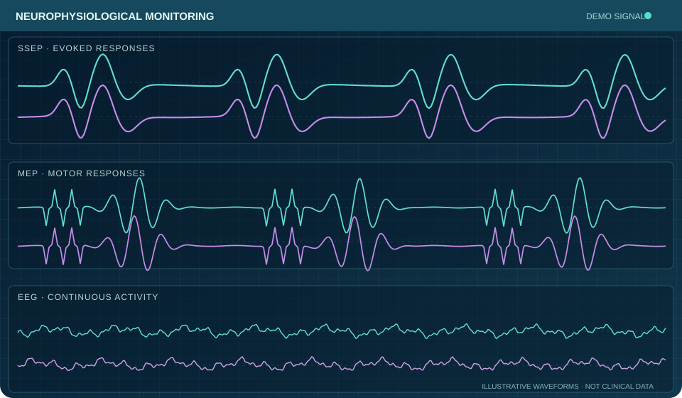

◉
Real-time monitoring
Neurophysiological information during procedures to help identify changes that may require attention.
Real-time neurophysiological monitoring designed to support surgical teams and informed intraoperative decisions.

Illustrative neurophysiological signals — not patient dataNeurophysiological information during procedures to help identify changes that may require attention.
Direct communication with surgeons, anesthesia professionals and the monitoring team.
SSEP, TcMEP, EMG, TgEMG, BAER and EEG monitoring selected according to clinical needs and procedure risk.
ALIANS Neurology is developing a service experience around clear communication, appropriate monitoring modalities, and responsive coordination with surgical teams.
Explore our monitoring modalities and learn what providers can expect.
Explore Modalities →